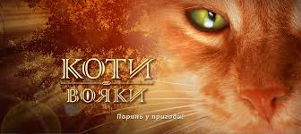

«Коти-Вояки» (англ. Warriors) — серія пригодницьких романів-фентезі для підлітків. У центрі сюжету — клани диких котів, які потрапляють у неймовірні пригоди, намагаючись захистити свою територію і своє життя.
Серія Warriors була написана британськими письменницями Кейт Кері, Черіт Болдрі, Тай Сазерленд у співавторстві з редактором Вікторією Холмс і під загальним псевдонімом Ерін Гантер. Серія видається у Великій Британії з 2003 року і дотепер. За цей час вона потрапила до списку світових бестселерів за версією «Нью-Йорк Таймс» і стала популярною у багатьох країнах світу. Згодом назву першої серії було змінено на «Коти-Вояки: Пророцтва починаються». Всього перша серія «Коти-Вояки: Початок пророцтв» складається із шести книг. Всього в основній серії вийшло 39 книг.
Сюжет першої книги "На Волю!"
Хатнього котика Рудька давно вже манять лісові хащі. Йому часто сниться один той самий сон, як він полює за здобиччю і вдихає свіжі запахи лісу. І ось одного разу сон стає реальністю — Рудько потрапляє до диких лісових котів, що ведуть війну за територію, за право полювати і мати їжу. У Вогнелапа є вибір: або повернутися назад до своїх хазяїв і бути живою іграшкою, або випустити на волю свої дикі інстинкти і стати справжнім вояком Клану…
Сюжет другої книги "Вогонь і Крига"
Продовження історії хатньої кицюні Вогнесерда, який став вояком Громового Клану диких котів. Полювання у лісових хащах, ночівля під зоряним небом і повна свобода, яку ніхто не обмежує… Про що ще можна мріяти? Та чомусь Вогнесерд все частіше згадує своє минуле. Там були любов, тепло, ласка, а зараз навколо нього — байдужість і нерозуміння. Чи стане він врешті своїм для Клану, за який ладен віддати власне життя?
Сюжет третьої книги "Ліс Таємниць"
Крок за кроком Вогнесерд та його друзі намагаються викрити жахливі таємниці воєводи Громового Клану. Розгадка, здається, так близько — за деклька мишачих хвостів. Але доля знову збиває їх зі сліду та готує несподівані повороти подій. Можливо, і не варто сувати носа в чужі таємниці… Адже ніхто напевне не знає, чим обернеться для котів правда, яку приховує цей темний, прадавній ліс.
Сюжет четвертої книги "Здіймається Буря"
Крок за кроком Вогнесерд та його друзі намагаються викрити жахливі таємниці воєводи Громового Клану. Розгадка, здається, так близько — за деклька мишачих хвостів. Але доля знову збиває їх зі сліду та готує несподівані повороти подій. Можливо, і не варто сунути носа в чужі таємниці… Адже ніхто напевне не знає, чим обернеться для котів правда, яку приховує цей темний, прадавній ліс.
Сюжет п'ятої книги "Небезпечний шлях"
Клан ще не оговтався після великої пожежі, а на нього вже чекає небезпечне випробування. У прадавньому лісі оселилося зло. Щось невідоме і надзвичайно жорстоке полює на котів — щось, перед чим безсилі пазурі та зуби наймогутніших вояків. Зореклан намагається попередити Вогнесерда і Синьозірку про небезпеку. Та чи зможуть вони прислухатися до голосу пращурів і подолати власну ворожнечу, щоб урятувати Клан?
Сюжет шостої книги "Темні Часи"
Новий провідник Громового Клану, Вогнезір, разом із даром дев'яти життів отримує від пращурів-вояків загрозливе застереження: «Лев із тигром зустрінуться в битві, і кров запанує над лісом». Що означають пророчі слова Зореклану? Намагаючись розгадати цю загадку, Вогнезір робить усе можливе, аби захистити Громових котів від жорстокої помсти давнього ворога. Та він навіть і не підозрює, що тепер у його лапах не тільки майбутнє власного Клану, але й усього лісу.